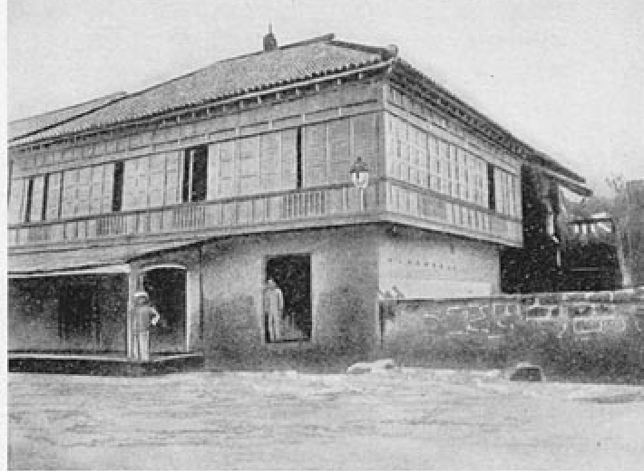
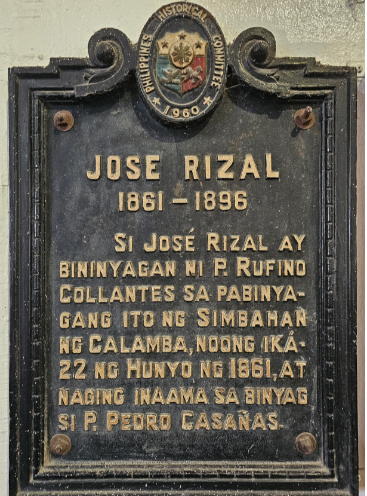
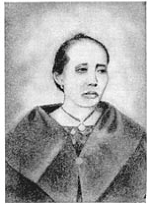
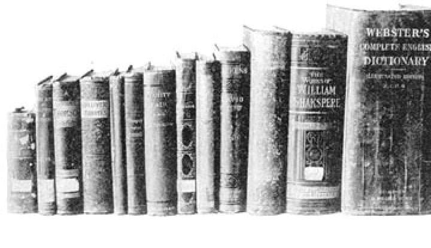
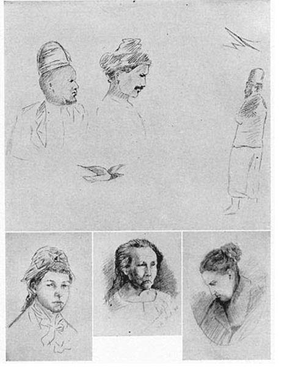
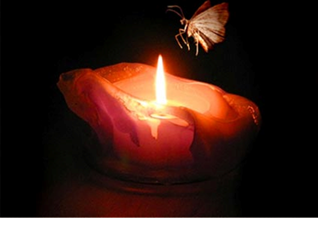
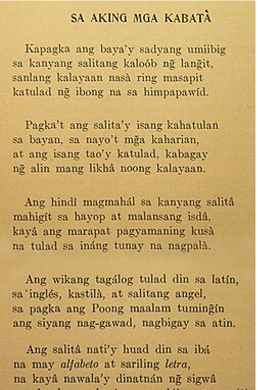
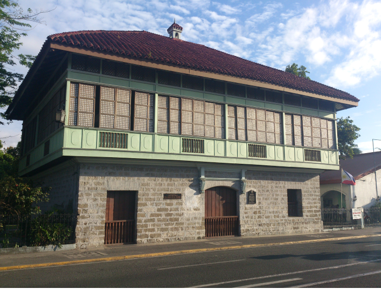
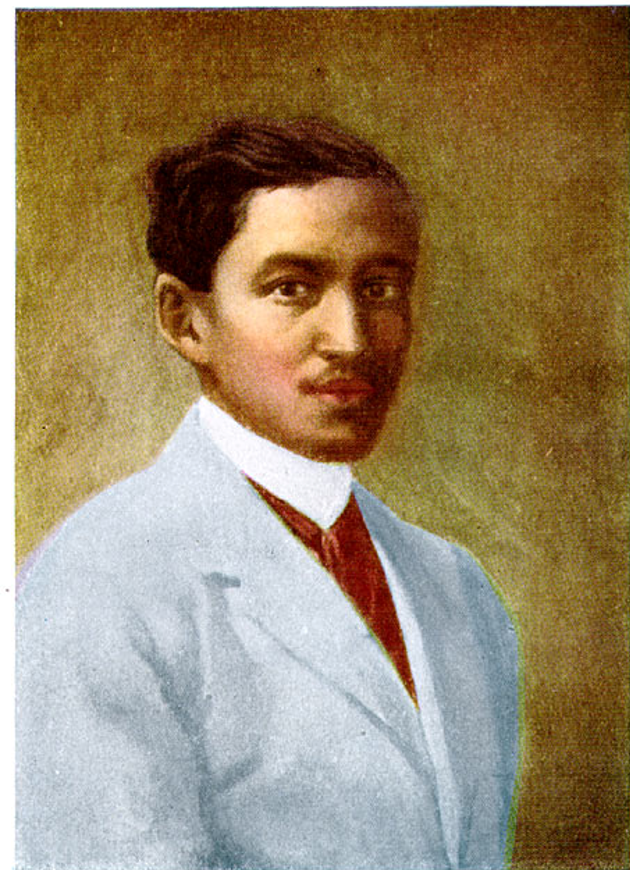

Growing Up in Calamba
The peaceful town that cradled a hero's earliest years.

José Rizal spent his childhood in the peaceful town of Calamba, Laguna, where he was surrounded by a loving family, abundant natural scenery, and an environment that valued education and discipline. His early years were filled with experiences that nurtured his intelligence, creativity, compassion, and strong moral character. These childhood influences became the foundation of his future achievements as a physician, writer, reformist, and the National Hero of the Philippines.
Growing up in a close-knit and educated family, Rizal learned the importance of hard work, respect, honesty, and service to others. The guidance of his parents, siblings, relatives, and teachers helped shape the ideals that would later inspire his writings and peaceful campaign for reforms.
A Hero Is Born
Birth and Baptism
José Protacio Rizal Mercado y Alonso Realonda was born on June 19, 1861, between 11:00 p.m. and 12:00 midnight, in Calamba, Laguna. He was the seventh of eleven children of Don Francisco Mercado and Doña Teodora Alonso Realonda.
Three days later, on June 22, 1861, he was baptized at St. John the Baptist Parish Church in Calamba by Father Rufino Collantes. His godfather was Father Pedro Casañas, a close friend of the Rizal family.
He received the name José Protacio because his birth coincided with the feast day of Saint Protasius, following Catholic tradition. The surname Rizal, which means "green fields," had been adopted by the Mercado family after Governor-General Narciso Clavería's decree requiring Filipino families to adopt standardized surnames.

A Childhood Timeline
Born the night of June 19, seventh of eleven children of Francisco Mercado and Teodora Alonso.
Baptized three days later at St. John the Baptist Parish Church by Father Rufino Collantes.
His younger sister Concepcion ("Concha") died of illness — a loss Rizal later called the first sorrow of his life.
Wrote "Sa Aking Mga Kabata" (To My Fellow Children), celebrating love of one's native language.
Departs Calamba to begin formal schooling under Maestro Justiniano Aquino Cruz.
The Foundations of Character
Learning at Home

Before attending formal school, José Rizal received his first lessons from his mother, Doña Teodora Alonso, who became his very first teacher. She patiently taught him the alphabet, reading, writing, prayers, and the basic principles of good manners and moral conduct.
Rizal quickly displayed remarkable intelligence and curiosity. At an early age, he learned to read and write and developed a deep love for books. Unlike many children, he constantly asked thoughtful questions and preferred logical explanations rather than memorizing lessons.
His parents encouraged him to think independently, observe carefully, and always seek knowledge — qualities later evident in his scientific thinking, literary works, and reformist philosophy.
Besides his mother's guidance, José Rizal studied under several private tutors before entering formal education. His first tutor was Maestro Celestino, who introduced him to the fundamentals of reading and writing. He was later taught by Maestro Lucas Padua, who continued his elementary education and strengthened his academic skills.
Another important tutor was Leon Monroy, a former classmate of Don Francisco Mercado. Monroy taught José Spanish and Latin and recognized his exceptional intelligence. Although Monroy passed away before completing Rizal's education, he became one of the first teachers to influence the young scholar's academic development.
These early tutors helped prepare Rizal for higher education by strengthening his reading, writing, language, and reasoning skills.
Aside from his parents and tutors, José Rizal greatly benefited from the guidance of his three maternal uncles, each of whom contributed to different aspects of his development.
Uncle José introduced José to regular academic lessons and encouraged disciplined study habits, strengthening his reading, writing, and reasoning skills.
Uncle Manuel focused on José's physical development. Recognizing that José was naturally frail, he trained him in swimming, wrestling, hiking, horseback riding, and other physical activities that helped him become stronger and healthier.
Uncle Gregorio, an intellectual and avid reader, inspired José's lifelong love for books, reminding him that success could only be achieved through continuous effort and hard work.
Together, these three uncles helped shape José into a well-rounded individual who excelled intellectually, morally, and physically.
At the age of nine, José Rizal left his hometown of Calamba to pursue formal education in Biñan, Laguna. He enrolled at the school of Maestro Justiniano Aquino Cruz, one of the town's most respected teachers.
Although José was one of the youngest and physically smallest students in the class, he quickly distinguished himself through his intelligence, diligence, and determination. He consistently outperformed many of his older classmates in academic subjects.
While studying in Biñan, Rizal also developed friendships, learned independence, and continued to improve his artistic abilities in drawing and painting. His experiences in Biñan prepared him for higher education and strengthened his confidence.
From an early age, José Rizal developed an extraordinary love for reading. Encouraged by his mother and Uncle Gregorio, he spent much of his free time reading books about religion, history, literature, science, and philosophy.
Reading allowed him to explore new ideas, understand different cultures, and develop critical thinking skills. His passion for learning continued throughout his life and became one of the foundations of his success as a physician, linguist, scientist, novelist, and reformist.

Books that remained from Rizal's library
José Rizal demonstrated remarkable artistic talent even during childhood. He enjoyed drawing, sketching, painting, sculpting, carving, and writing poetry.
Using clay and wax, he created miniature sculptures that impressed his family and teachers. He also loved designing objects and illustrating scenes from nature and daily life.
These artistic abilities continued to develop throughout his life and complemented his literary achievements, proving that he was not only an accomplished scholar but also a gifted artist.

Sketches by Rizal
Outside the classroom, José Rizal spent much of his time exploring the natural world. He enjoyed gardening, collecting insects and butterflies, observing birds and animals, planting trees, and conducting simple scientific observations.
He often took walks around Calamba, carefully studying plants, rivers, mountains, and the daily lives of farmers. These experiences cultivated his curiosity about science and nature, which later influenced his studies in medicine, biology, agriculture, and the natural sciences.
The First Lesson on Sacrifice
The Story of the Moth

One evening, while Doña Teodora was telling stories to her children, José noticed a moth repeatedly flying around a burning oil lamp until it was consumed by the flame.
Curious, he asked his mother why the moth continued flying toward the light despite the danger. She explained that the moth was attracted by the brightness but failed to recognize the consequences of its actions.
This simple incident deeply impressed the young Rizal.
Like the moth, he would dedicate himself to truth, justice, and the welfare of his country — despite knowing that these ideals could eventually cost him his life.— historians, on the symbolism of the moth
A Young Poet
First Literary Work

At approximately eight years old, José Rizal wrote his first known poem entitled "Sa Aking Mga Kabata" (To My Fellow Children).
The poem emphasized the importance of loving one's native language and encouraged Filipino children to value their cultural identity. One of its most famous lines states that a person who does not love his own language is "worse than a beast and a foul-smelling fish."
Although modern historians continue to debate whether Rizal truly authored the poem, it remains an important part of traditional Rizal studies because it reflects the patriotic ideals associated with his youth.
Sa Aking Mga Kabatà
Kapagka ang baya'y sadyang umiibig
sa kanyang salitang kaloób ng langit,
sanlang kalayaan nasà ring masapit
katulad ng ibong nasa himpapawíd.
Pagka't ang salita'y isang kahatulan
sa bayan, sa nayo't mga kaharian,
at ang isang tao'y katulad, kabagay
ng alin mang likhâ noong kalayaan.
Ang hindî magmahál sa kanyang salitâ
mahigít sa hayop at malansang isdâ,
kayâ ang marapat pagyamaning kusà
na tulad sa ináng tunay na nagpalà.
Ang wikang tagalog tulad din sa latín,
sa inglés, kastilà, at salitang angel,
sa pagka ang Poong maalam tumingín
ang siyang nag-gawad, nagbigay sa atin.
Ang salitâ nati'y huwad din sa ibá
na may alfabeto at sariling letra,
na kayâ nawalà'y dinatnán ng sigwâ
ang lunday sa lawà noong dakong una.
The First Great Loss & The Beauty of Calamba
The Death of Concepcion
Among José's siblings, he was especially close to his younger sister Concepcion, affectionately called Concha. When Concha died from illness at the age of three, José experienced profound grief for the first time. Years later, he remembered her death as the first sorrow of his life.
This painful experience taught him about love, compassion, and the fragility of human life — one of the earliest emotional experiences that shaped his understanding of suffering.
Nature as a Classroom
Growing up in Calamba, Laguna, José Rizal was surrounded by rice fields, forests, rivers, and the scenic shores of Laguna de Bay. He spent much of his childhood observing plants, animals, insects, and the daily lives of farmers — nurturing his appreciation for nature and strengthening his scientific curiosity.
His love for the natural world later influenced many of his interests in medicine, biology, agriculture, engineering, and environmental conservation. Calamba served not only as his hometown but also as his first classroom, where he learned through observation and experience.

Childhood Values and Lasting Influence

José Rizal's childhood laid the foundation for the person he would become. The guidance of his parents, relatives, teachers, and siblings instilled in him a deep respect for education, hard work, honesty, discipline, and compassion. His early experiences — including his love for learning, artistic pursuits, encounters with injustice, and appreciation for nature — helped shape his vision of a better society.
These formative years influenced his later achievements as a physician, novelist, scientist, educator, and reformist. More importantly, they nurtured the patriotism and moral courage that inspired him to dedicate his life to the peaceful pursuit of freedom and justice for the Filipino people.
Family & Gallery
How Well Do You Know José?
A short quiz on the childhood that shaped a hero.
References
gutenberg.org/files/6867/6867-h/6867-h.htm · tota.world/article/3744 · thegloomytraveller.wordpress.com · scribd.com/document/481620859 · scribd.com/presentation/540889791 · en.wikipedia.org/wiki/Early_life_and_education_of_Jose_Rizal · lahingpinoy.wordpress.com · commons.wikimedia.org